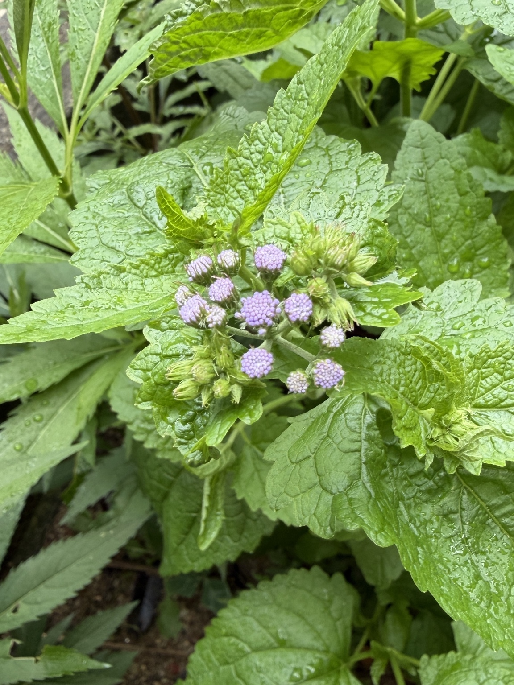

2026/06/27 わが家の観察記録
2026年6月27日。前回の観察から11日が経ち、青花丸葉フジバカマは、茎や葉を伸ばす時期から花を咲かせる時期へと移り始めました。
写真中央には、丸みを帯びた淡紫色の花房が10個以上見えます。ひとつひとつの花房には小さな花が粒のように密集しており、まだ花が開ききってはいませんが、単なるつぼみの段階ではなく、開花直前まで進んだ状態です。
淡紫色に色づいた花房の周囲には、まだ緑色を残した花房もあります。同じ株の中でも成長の進み方に差があり、これから順番に色づきながら開花していく様子がうかがえます。
この小さな花の集まりから、数日から1週間ほどで一本一本の細い花柱が伸び始めると考えられます。花柱が伸びるにつれて、青花丸葉フジバカマらしい、淡い青紫色のふんわりとした花姿へ変化していきます。
葉には雨のしずくが残り、濃い緑色の大きな葉の間で、淡紫色の花房がはっきりと目立つようになりました。地植えを始めた5月6日から約7週間。葉を大きく広げながら成長し、いよいよ最初の開花を迎えようとしています。
これから花房がどの順番で開いていくのか、また、細い花柱が伸びることで花の印象がどのように変わっていくのか、引き続き観察していきます。

0 件